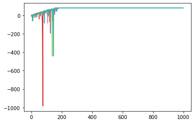
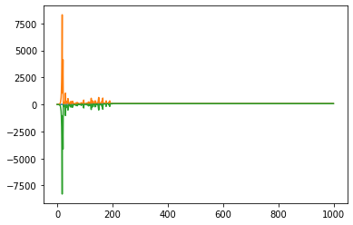
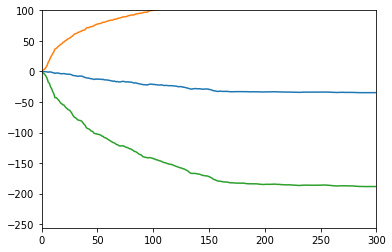
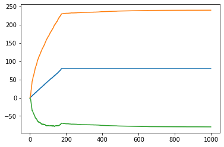

def get_spin_result(win_prob):
result = False
if np.random.random() <= win_prob:
result = True
return result Introduction
A student of probability is practically guaranteed to see games of chance during their studies - coin flipping, card drawing, dice games. This usually seems contrived, when in fact games of chance have been central to the development of probability and statistics. Unfortunately, the games studied are often simplified and betting strategies are constrained.
There are good reasons for this: analysis of betting strategies requires an understanding of simulation, which might be too advanced for an intro probability course. But at a certain point it’s useful to analyze simple toy strategies and discover their extreme properties. The martingale system is one such strategy: a simple betting that recommends doubling the value bet with each loss.
It is not a new strategy, as we can gather from this 18th century account:
Casanova’s diary, Venice, 1754: Playing the martingale, and doubling my stakes continuously, I won every day during the remainder of the carnival. [..] I congratulated myself upon having increased the treasure of my dear mistress [..]
Then, several days later:
I still played on the martingale, but with such bad luck that I was soon left without a sequin. As I shared my property with my mistress, [..] at her request I sold all her diamonds, losing what I got for them; she had now only five hundred sequins by her. There was no more talk of her escaping from the convent, for we had nothing to live on!
Source: Betting systems: how not to lose your money gambling (G. Berkolaiko)
Casanova’s account is important as it reveals some of the shortcomings of the strategy: the strategy does not consider the remaining bankroll, so the gambler with finite resources exposes themselves to the risk of ruin. In slightly more technical terms martingale betting strategy on a fair (50-50, even odds) game is a sure thing only with infinite capital to absorb long losing streaks with exponentially increasing losses. An unfair (subfair) game is a loss no matter the betting strategy (there is theoretical work to support this). Subfair games include most casino games (poker excepted - the casino will never let you pick their pocket but picking another punter’s pocket is a matter of supreme indifference).
Roulette is one such subfair casino game. Roulette distinguished not only by its but its utility as a litmus for gamblers. Roulette strategies reveal bad gamblers (who favor magical thinking and lucky numbers), smart gamblers (who strictly use bold play on red or black), and smarter gamblers (to be found in the poker room or at a hedge fund).
Roulette, or rather Rou-let’s not
The roulette wheel is likely familiar from any number of appearances in movies and TV. The pockets in the American roulette wheel are labeled with numbers 1 to 36, alternating red and black color. Two special pockets, numbered 0 and 00, are colored green.

Boil it down to a choice, uniformly at random between the integers 1 to 38, inclusive. (notice that there is a 0 and a 00 that are neither Red nor Black).
There is a commom misconception that the machine needs to be somehow “rigged” or “fixed” (non-uniform random) to rob the player of their advantage. This is not true, the math works out that way for a random choice. The mechanism is completely random, but the house edge is guaranteed through careful construction of the wheel and the possible wagers. If you lose your shirt at the table, your gripe is with probability, not the casino or the gaming control board.
The house edge comes from a restriction on the possible bets and unfavorable payouts on the allowed bets. If I had my way, I would walk into the casino and wager all of my money against all of theirs that the outcome is in \(\{00, 0, 1, 2, 3, ... , 36\}\) (with probability 1) and be guaranteed a hefty profit. Unfortunately, we can’t do that. We cannot even come close: in American roulette, the best possible bet is any one of the
The first step in any simulation is to write code that handles the logic of the generating process itself. As we describe above, roulette is a simple uniform random choice among \(n\) pockets, where each of the possible bets has a payoff that is easily calculated from the uniform probability law (a table of these odds and expected values can be found at https://en.wikipedia.org/wiki/Roulette#Bet_odds_table). So one very generic way to describe roulette spins is through a function that takes the calculated win probability and returns True if a random float is within the win probability or False if the random float is outside the win probability.
So, if we bet on Black (the closest thing to a fair bet we’ll find in this game), we double our money if the ball lands on Black and lose it all if the ball lands on Red. (a 1:1 payout)
Doubling Down
Now we’ve established what happens in a single round of roulette, we need to ask how to make generalizations about the game: what exactly can we control in this game?
- Type of bets
- Value of bets
For simplification sake, we’re considering only one type of bet (though the
This is where the martingale strategy comes in:
After every win: Reset the wager \(w\) to some base wager \(n\)
After every loss: Double the wager to \(2w\)
So after some number of losses (let’s say \(k\) losses), the next wager will be \(n*2^{k}\)
Now we have a (not) new, enticingly simple strategy, the first order of business is to determine the performance of this strategy in our game.
With some sloppy hardcoding, our simulation code is the follwing:
def sim1k(win_prob, n=1000):
# This will be a list of True/False boolean spin outcomes
wl_seq = [get_spin_result(win_prob) for sim in range(n)]
# Use these to collect our winnings, and set our win amount and bet size
winnings = []
win = 0
bet = 1
# Progress through win loss outcomes in wl_seq
for wl in wl_seq:
# Cut off when total winnings reach $80
if win < 80:
# Resetting bet to 1 in case of win
if wl == True:
win = win + bet
bet = 1
# Doubling in case of loss
else:
win = win - bet
bet = bet * 2
winnings.append(win)
return winningswin_prob = (18./38.)
tentrials = [sim1k(win_prob) for x in range(10)]
for trial in tentrials:
plt.plot(range(1000), trial)
ktrials = [sim1k(win_prob) for x in range(1000)]
#print(sum(np.any(np.array(ktrials) == 80., axis=1)) / len(np.any(np.array(ktrials) == 80., axis=1)))
ktmean = np.mean(ktrials, axis = 0)
ktsd = np.std(ktrials, axis = 0)
for arr in (ktmean, ktmean + ktsd, ktmean - ktsd):
plt.plot(range(1000), arr)ktmed = np.median(ktrials, axis = 0)
for arr in (ktmed, ktmed + ktsd, ktmed - ktsd):
plt.plot(range(1000), arr)
So what’s the problem there?
Do not track bankroll - we can make huge losses during the interim
In any reasonable casino, there is a limit to bet size
Often the lower ceiling is the size of our own bank account
def sim1k_bankroll(win_prob, n=1000):
wl_seq = [get_spin_result(win_prob) for sim in range(n)]
winnings = []
win = 0
bet = 1
for wl in wl_seq:
if (win < 80 and win > -256):
if wl == True:
win = win + bet
bet = 1
else:
win = win - bet
bet = min(bet * 2, 256. + win)
winnings.append(win)
return winningsktrials_real = [sim1k_bankroll(win_prob) for x in range(1000)]
ktmean = np.mean(ktrials_real, axis = 0)
ktsd = np.std(ktrials_real, axis = 0)
ktmed = np.median(ktrials_real, axis = 0)
plt.figure()
plt.xlim((0,300))
plt.ylim((-256,100))
for arr in (ktmean, ktmean + ktsd, ktmean - ktsd):
plt.plot(range(1000), arr)
for arr in (ktmed, ktmed + ktsd, ktmed - ktsd):
plt.plot(range(1000), arr)
What if I HAVE to play roulette?
First, my condolences to you and your wallet!
Fortunately, all is not lost. There is a strategy that can help you leave with your shirt. The intuition is explained in Berkolaiko’s lecture:
If the game is subfair, every round we lose some (on average).
To minimize losses — minimize rounds!
Although we are in “damage control” mode, we are still being exposed to randomness that can cut both ways. In the long run, it will cut against us, but we can choose to simply not expose ourselves to the long run. We will bet aggressively and get out as soon as possible.
Conclusions
Sources
Betting systems: how not to lose your money gambling (Gregory Berkolaiko)
Expected value and Betting systems (Luc Rey-Bellet)